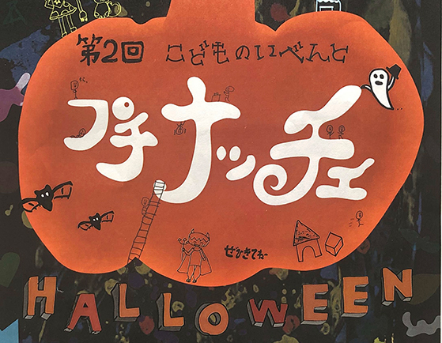
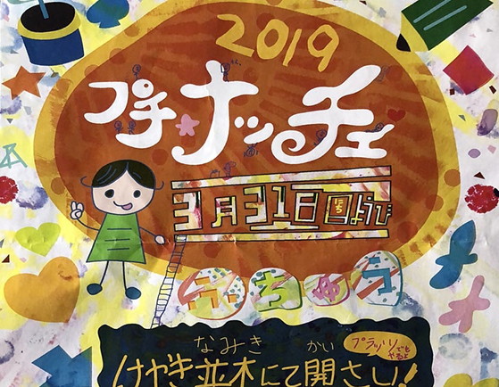
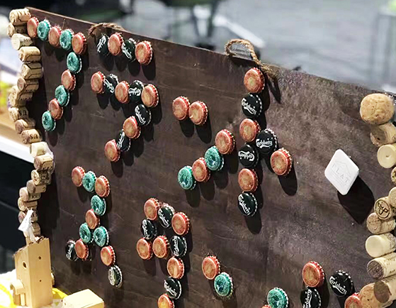

第二回プチナッチェ

前回に引き続きプチナッチェ実行委員とともに活動し、
プチナッチェ
前回に引き続きプチナッチェ実行委員とともに活動し、
毎週こども会議に参加して企画を考えています。
今回の開催は10月27日！
ハロウィンをコンセプトにしています。
ZATは当日のおばけやしき企画の創作担当なので、
現在一生懸命準備をしています！
前回に引き続きポスターもZATお手製です！
詳しくはプチナッチェのページをご覧ください。
プチナッチェ
アトリエ施設「ズッコロッカ」のお手伝い
ZATの立ち上げからみまもっている図工の先生、
水Pが新たに始めたアトリエ、
ズッコロッカのお部屋を掃除したり、
内部装飾をしてオープンに向けて一緒に準備をしました。
七夕に開催した7つ星マルシェでは、
スタンプカードとスタンプ、企画の１つを担当しました。
ズッコロッカの詳細は、リンク先のページをご覧ください。
ズッコロッカ
第一回プチナッチェ開催

プチナッチェとは、こどもが主役の市や、市民、
プチナッチェとは、こどもが主役の市や、市民、
クリエイターが一丸となる、府中市のメインストリート
で行われるイベントです。実行委員会とともに
初回プチナッチェの開催に携わりました。
プチナッチェという名前やテーマソングを考えたり、
当日はワークショップ、自由にかける黒板、
手作りのガチャガチャを企画して運営しました。
darumareというお菓子屋さんとコラボして
オリジナルパッケージも作成しました。
府中市民協働まつりに参加
府中市民協働まつりではくじを作成し、
周りのお店と連携したキャンペーンを行いました。
当たりが出たらその店の商品と
交換してもらえるように考え、
当日は大好評でした！
リサイクル素材で看板作り

ZATとして、初めて学校を飛び出した活動です。